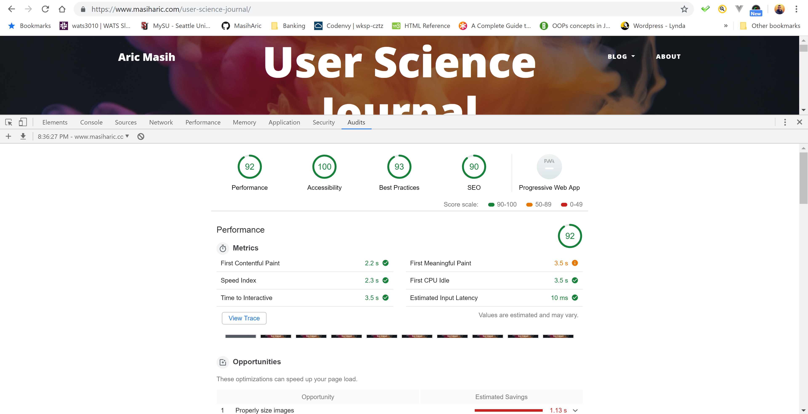

Making User Science Journal Accessible.
Lighthouse.
Wave
Summary of results.
Main focus for this week’s blog is to make my journal more accessible. I am evaluating my journal with tools like Lighthouse and Wave. Light house is an open-source, automated tool for improving the quality of web pages and Wave is a free accessibility tool. The initial scores from Lighthouse analysis are 88-76 for all the blogs. Wave tool is recommending to adjust contrast, missing information in the footer, and alt attribute for images.
Recommendations.
These results also align with suggestions in Steve Kurg’s book. I am going implement these changes. I am not going to use small, low contrast type, not putting labels inside form fields, preserving the distinction between visited and unvisited text links, and not floating heading between paragraphs. Other common things I am going to focus on are: eliminating things that are confusing on my site, and reading more about accessibility. Since I used my first blog as template for all the other blogs, I had same errors over all. If I had known of these accessibility requirements from the beginning, I would have saved lots of time by starting out the right way. Bootstrap is easy to work with and making changes for accessibility is also not an issue.